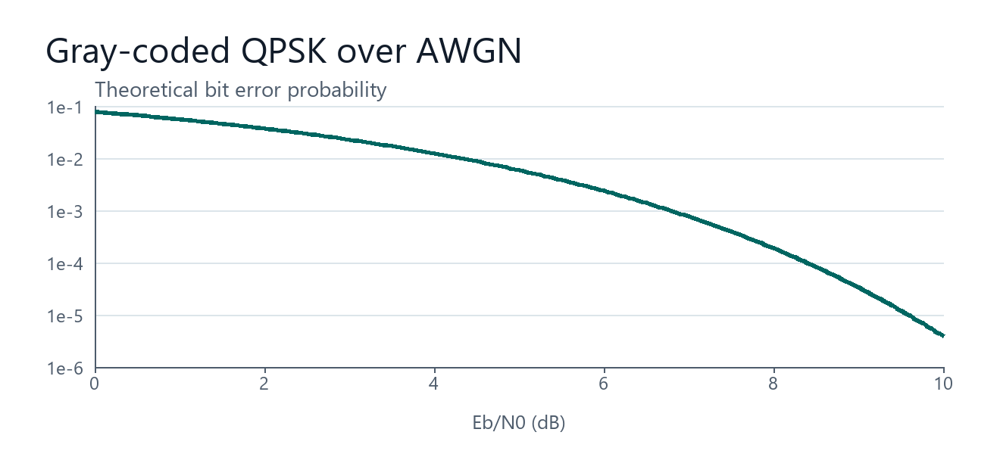

How QPSK carries two bits per symbol
I implemented normalized Gray-coded QPSK and 16-QAM in Python. In QPSK, two bits select one of four phase states. Viewed in complex baseband, each symbol has an in-phase component (I) and a quadrature component (Q). Choosing each component from ±1/√2 gives unit symbol energy. Gray coding makes adjacent constellation points differ by one bit.
Pulse shaping and the matched filter
I upsampled the symbols and shaped them with a root-raised-cosine (RRC) filter before adding complex white Gaussian noise. The roll-off controls excess bandwidth. The finite filter span trades processing cost and delay against how closely the filter approximates the ideal response.
The receiver applies a matched RRC filter and samples at the symbol centers after accounting for filter delay. The ideal transmit–receive cascade is raised cosine, with zeros at all other symbol-spaced sampling instants. That property suppresses intersymbol interference at the decision times. Noise can still move a sample across a decision boundary.
- Map and upsampleBits → complex I/Q symbols
- Shape and transmitTransmit RRC + complex AWGN
- Filter and sampleMatched RRC at the receiver
- Decide and compareDemap symbols and count bit errors
Verification and what each plot shows
I compared Monte Carlo bit error rates across Eb/N0 against theory. For unit-energy QPSK, the energy per bit is half the energy per symbol. Using that conversion when setting the noise level is essential to comparing the simulated and theoretical curves on the same axis. A BER estimate is the number of erroneous bits divided by the number sent, so more bits are needed to characterize rare errors at high Eb/N0.
Constellation plots show how noise spreads samples around the decision points. Eye diagrams show how much sampling and amplitude margin remains, while power spectral density shows the effect of pulse shaping on occupied bandwidth. The curve below is the analytical reference for coherent Gray-coded QPSK in AWGN. MathWorks BER equations
